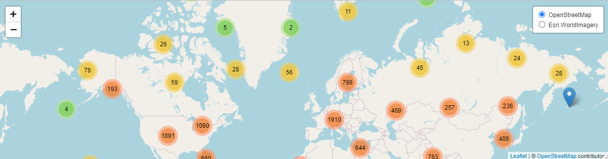

worldmet provides an easy way to access data from the NOAA Integrated Surface Database (ISD). The ISD contains detailed surface meteorological data from around the world for over 35,000 locations. See also the map. The package outputs (typically hourly meteorological data) work very well with the openair package.
Part of the openair toolkit
|
|
|
üí° Core Features
worldmet has a small handful of core functionality.
Access ISD metadata using
getMeta().Import ISD monitoring data using
importNOAA(), with options to improve performance with parallel processing. Data is in a format ready to use with, for example,openair::windRose().Write files in ADMS format using
exportADMS().

üìñ Documentation
All worldmet functions are fully documented; access documentation using R in your IDE of choice.
?worldmet::importNOAADocumentation is also hosted online on the package website.
A guide to the openair toolkit can be found in the online book, which contains lots of code snippets, demonstrations of functionality, and ideas for the application of openair’s various functions.
üóÉÔ∏è Installation
worldmet can be installed from CRAN with:
install.packages("worldmet")You can also install the development version of worldmet from GitHub using pak:
# install.packages("pak")
pak::pak("davidcarslaw/worldmet")üèõÔ∏è worldmet is primarily maintained by David Carslaw.
üìÉ worldmet is licensed under the GNU General Public License.
üßë‚Äçüíª Contributions are welcome from the wider community. See the contributing guide and code of conduct for more information.